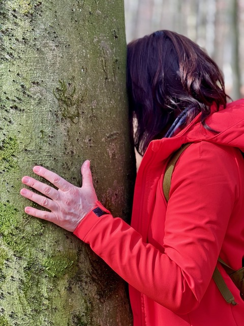

Moja historia

Od ciągłego działania
do życia w zgodzie ze sobą
„Przyjechałam do Niemiec z biletem w jedną stronę."
Przez wiele lat budowałam swoje życie od podstaw. Pracowałam w medycynie, rozwijałam się zawodowo, wychowywałam dzieci i brałam odpowiedzialność za wszystko wokół mnie.
Przez 35 lat żyłam z pedałem gazu wciśniętym do końca. W pewnym momencie odkryłam, że mimo wszystkich osiągnięć zgubiłam samą siebie.
Rozpoczęłam własną podróż poprzez medytację, pracę z energią i rozwój świadomości. Od ponad 10 lat uczę się tej drogi i każdego dnia sama nią podążam.
Dzisiaj z radością towarzyszę innym kobietom w ich własnej podróży do wewnętrznego domu, spokoju i połączenia ze sobą.